Un centro de buceo en el que obtener tu curso PADI, descubrir la vida marina y hacer que tus inmersiones sirvan para proteger los océanos.
Fundamos Buceo Ría con un objetivo claro: fundar el centro de buceo en el que a nosotros nos gustaría bucear. Desde tu primera inmersión hasta convertirte en un buceador experimentado, nuestra prioridad eres tú.
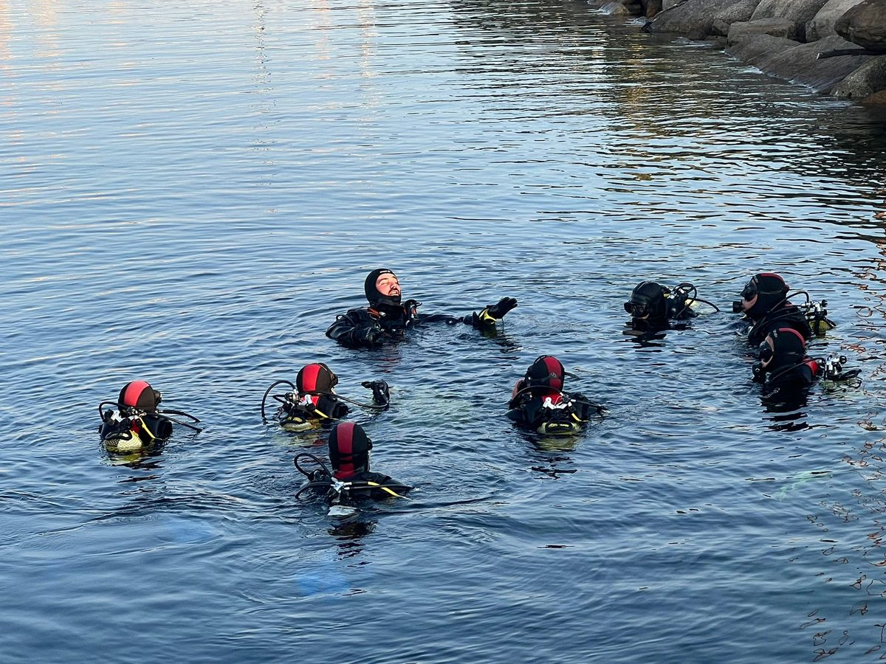
Un sistema de enseñanza en el que tú eres el protagonista. Amplio catálogo de cursos PADI, desde Open Water hasta especialidades avanzadas, siempre con instructores que se implican en tu progreso.
Formación PADI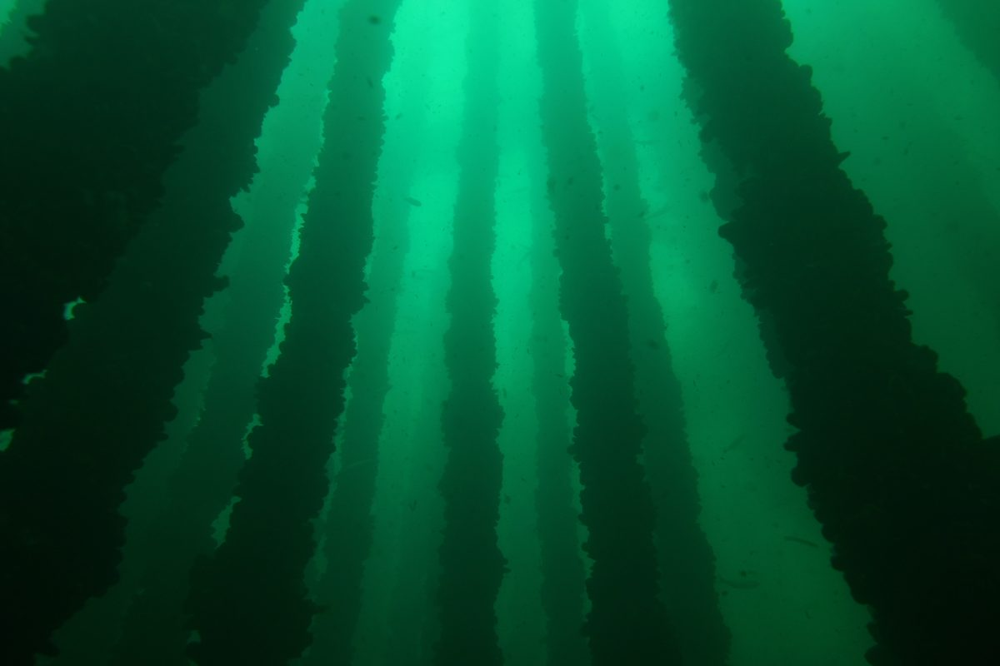
Un equipo de profesionales del mundo marino que darán una nueva dimensión a tus inmersiones. No te limitarás a bucear: aprenderás sobre el océano, sus ecosistemas y las especies que pueblan la Ría de Vigo y las Islas Cíes.
Biología marina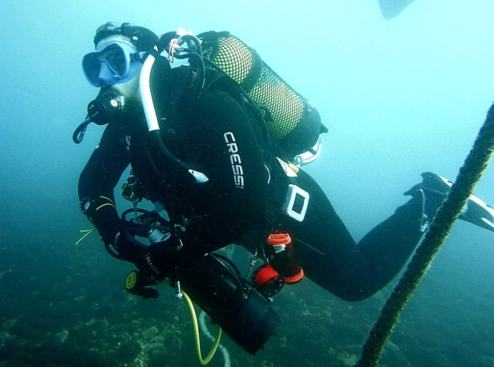
Actividades de divulgación y ciencia ciudadana para que cada burbuja sea relevante. Involúcrate en la conservación de la naturaleza en el entorno del Parque Nacional Marítimo-Terrestre de las Islas Atlánticas de Galicia.
Ciencia ciudadana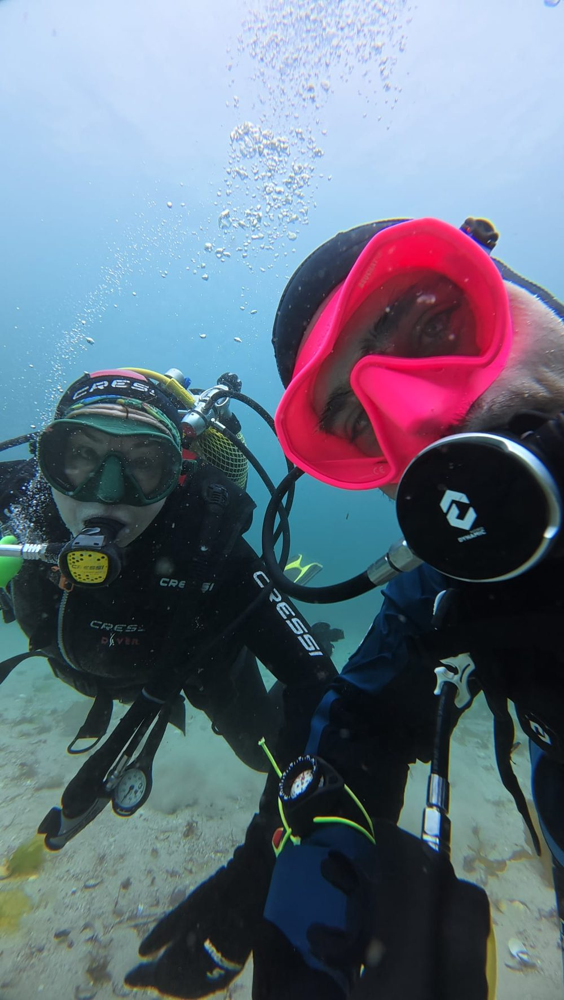
Una comunidad para los amantes del mar en la que aprender juntos. Salidas grupales, encuentros formativos y una red de buceadores que comparte los mismos valores.
Comunidad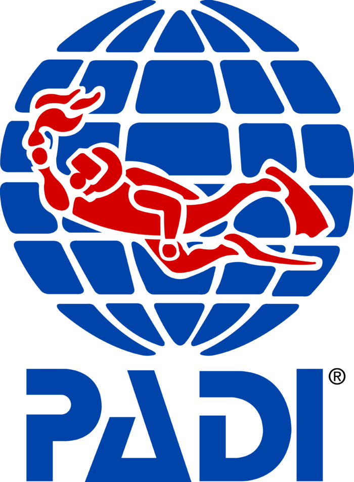
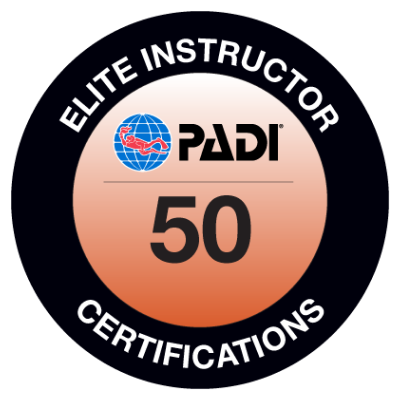
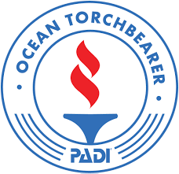
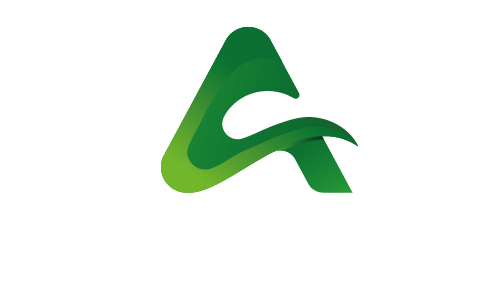
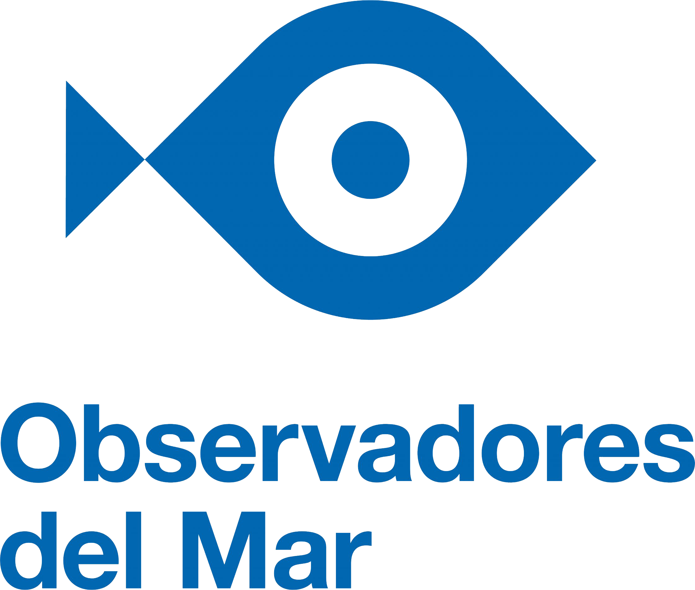
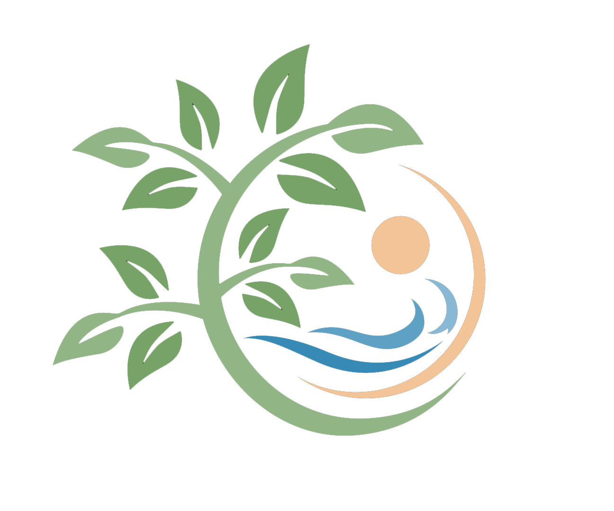
Tres principios que guían cada inmersión, cada curso y cada actividad en Buceo Ría.
Los buceadores bien formados tienen más probabilidades de seguir buceando y hacerlo de modo seguro y consciente. Invertir en educación es invertir en el futuro del océano.
Involucrando a los buceadores con el entorno y brindándoles formación sobre la vida marina, ayudamos a proteger los océanos. El conocimiento transforma la experiencia y la conciencia.
Un enfoque claro hacia la sostenibilidad, la reducción de nuestro impacto y la remediación ambiental. Porque cada inmersión debería dejar el mar mejor de como lo encontramos.
Un equipo apasionado por el mar en el que se combinan la experiencia de buceo con el conocimiento científico de los ecosistemas marinos de Galicia.
Biólogo Marino, Guía Oficial del Parque Nacional de las Islas Atlánticas de Galicia y PADI Master Scuba Diver Trainer con más de 15 años de experiencia bajo el mar. Apasionado por el buceo en las Rías Baixas y la divulgación ambiental, cofundó Buceo Ría con el objetivo de cambiar el modo en que los buceadores nos acercamos al océano.
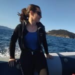
Bióloga Marina, Guía Oficial del Parque Nacional de las Islas Atlánticas de Galicia y PADI Advanced Open Water Diver. Con siete años de experiencia como buceadora y guía del Parque Nacional, su pasión por la enseñanza y la divulgación ambiental la llevaron a cofundar Buceo Ría como una herramienta para acercar el conocimiento del medio marino a la gente.
Aún no hemos abierto, pero ya puedes ser parte de esto. Déjanos tus datos y te avisaremos en cuanto podamos empezar a bucear juntos.
En cumplimiento del RGPD y la LOPDGDD, tus datos serán tratados por Buceo Ría para gestionar tu solicitud de lista de espera y, si lo consientes, enviarte la newsletter. No los compartimos con terceros. Puedes ejercer tus derechos de acceso, rectificación, supresión, limitación, portabilidad y oposición escribiendo a vigo@buceoriavigo.com. Más información en nuestro Aviso Legal y Política de Privacidad.